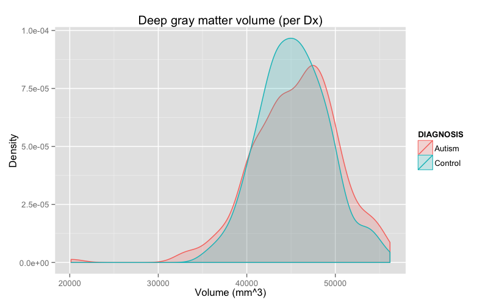
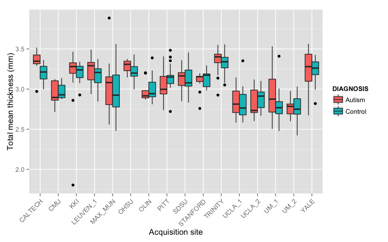

ABIDE data
Nick Tustison
November 23, 2014
Demographics
Preprocessing: subset and matching
results <- read.csv( './Data/labelresultsAnts.csv' )
resultsSubset <- results[which( results$gender == 1 & results$age >= 6 & results$age <= 35 & results$handedness == 'R' ),]
drops <- c( "area.5th.ventricle", "area.left.lesion", "area.right.lesion", "area.left.vessel", "area.right.vessel", "area.optic.chiasm",
"volume.5th.ventricle", "volume.left.lesion", "volume.right.lesion", "volume.left.vessel", "volume.right.vessel", "volume.optic.chiasm" )
resultsSubset <- resultsSubset[, !( names( resultsSubset ) %in% drops )]
# match the data based on age and fiq
library( MatchIt )## Loading required package: MASSresultsDf <- data.frame( subject.id = resultsSubset$subject.id,
dx.group = resultsSubset$dx.group,
age = resultsSubset$age,
fiq = resultsSubset$fiq
)
resultsDf$dx.group <- as.numeric( resultsDf$dx.group ) - 1
resultsDf <- na.omit( resultsDf )
resultsDf <- match.data( matchit( dx.group ~ age + fiq, data = resultsDf, method = "nearest", discard = "both" ) )## Warning: Fewer control than treated units and matching without
## replacement. Not all treated units will receive a match. Treated units
## will be matched in the order specified by m.order: largestresultsMatched <- resultsSubset[which( is.element( resultsSubset$subject.id, resultsDf$subject.id ) ), ]
write.csv( resultsMatched, './Data/labelresultsANTsSubset.csv', quote = FALSE, row.names = FALSE )All sites
Total number of studies = 450
males = 450, females = 0
autism = 225, controls = 225
rights = 450, lefts = 0, ambis = 0
Age distribution

Gross results
Brain volume distribution

CSF volume distribution

Gray matter volume distribution

White matter volume distribution

Deep gray matter volume distribution

Total mean thickness distribution

Per site demographics
Site demographics
CALTECH: n = 11 (males = 11, females = 0)
CMU: n = 15 (males = 15, females = 0)
KKI: n = 27 (males = 27, females = 0)
LEUVEN_1: n = 25 (males = 25, females = 0)
MAX_MUN: n = 38 (males = 38, females = 0)
OHSU: n = 19 (males = 19, females = 0)
OLIN: n = 22 (males = 22, females = 0)
PITT: n = 36 (males = 36, females = 0)
SDSU: n = 22 (males = 22, females = 0)
STANFORD: n = 18 (males = 18, females = 0)
Site demographics (continued)
TRINITY: n = 43 (males = 43, females = 0)
UCLA_1: n = 53 (males = 53, females = 0)
UCLA_2: n = 18 (males = 18, females = 0)
UM_1: n = 50 (males = 50, females = 0)
UM_2: n = 27 (males = 27, females = 0)
YALE: n = 26 (males = 26, females = 0)
Age
Per site gross results
Brain volume

CSF volume

Gray matter volume

White matter volume

Deep gray matter volume

Total mean thickness

Paper results
Results: Intracranial volume
library( xtable )
results <- read.csv( './Data/labelresultsAntsSubset.csv' )
fit <- aov( total.volume ~ dx.group + site + age + fiq, data = results )
print( xtable( anova( fit ) ), type = "html" )| Df | Sum Sq | Mean Sq | F value | Pr(>F) | |
|---|---|---|---|---|---|
| dx.group | 1 | 635506407.47 | 635506407.47 | 0.04 | 0.8445 |
| site | 15 | 2744732545213.81 | 182982169680.92 | 11.09 | 0.0000 |
| age | 1 | 454992242535.23 | 454992242535.23 | 27.58 | 0.0000 |
| fiq | 1 | 2332337220.80 | 2332337220.80 | 0.14 | 0.7071 |
| Residuals | 431 | 7111246085396.22 | 16499410870.99 |